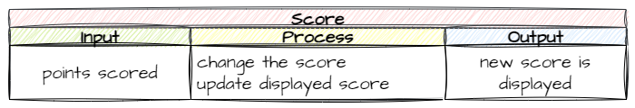

Add Scoring#
Now we have all our moving part, it’s time to reward the player for their efforts, and what better way to reward them, than using scoring.
GameFrame is an event-driven framework, so the easiest way in incorporate scoring it to connect it to various events.
We will be providing the player with both positive and negative scoring events:
Rescuing an astronaut → +50 points
Shooting an asteroid → + 5 points
Shooting an astronaut → -10 points
Lets work out how we can incorporate this into our code.
Display Score#
Planning#
First thing we need to do is find the scoring mechanism. Look to the GameFrame Documentation under the Globals variables you will see a variable called SCORE. We can use this to keep track of the score.
Next we need to work how we can draw numbers onto the screen. Again, referring to the GameFrame Documents you will notice the Text Object which specialises in displaying text. The docs also tell us that it is a special type of RoomObject, so we can treat it like a RoomObject. The __init__() requires extra arguments when you instantiate a TextObject. The TextObject also has a method to write new text values to the screen.
So we have our two mechanisms for recording and displaying the score. Before we start changing the score, lets try to display the current SCORE on the screen.
Coding#
Objects/Hud.py#
In the Objects folder create a new file called Hud.py, then enter the following code:
1from GameFrame import TextObject, Globals
2
3class Score(TextObject):
4 """
5 A class for displaying the current score
6 """
7 def __init__(self, room, x: int, y: int, text=None):
8 """
9 Intialises the score object
10 """
11 # include attributes and methods from TextObject
12 TextObject.__init__(self, room, x, y, text)
13
14 # set values
15 self.size = 60
16 self.font = 'Arial Black'
17 self.colour = (255,255,255)
18 self.bold = False
19 self.update_text()
Before we unpack this code, it is worth noting that, for the first time, the name of the class and the file name differs. They don’t have to be the same. We are going to have two HUD (Heads Up Display) elements: score and lives. It make sense to keep these two classes in the same file. Alternatively we could have made two files score.py and lives.py. You will find that in coding there are many valid paths to the destination.
Exploring this code a bit more:
line 1: the
Scoreclass is aTextObjectand the variableSCOREis part ofGameFrame.Globalsso these need to be imported.lines 7-12:
define the class as a subclass of the
TextObjectsclassidentifies four arguments that must be passed when creating a
Scoreobjectroom→ the room the object will be placed inx→ the x coordinate for the objecty→ the y coordinate for the objecttext→ the text that is going to be displayed
lines 15-18: sets all the font values for the text
line 19: write the text to the screen. Without the method call nothing will appear on the screen.
Save Hud.py.
Objects.__init__.py#
Open Objects.__init__.py and add the highlighted code below:
1from Objects.Title import Title
2from Objects.Ship import Ship
3from Objects.Zork import Zork
4from Objects.Asteroid import Asteroid
5from Objects.Laser import Laser
6from Objects.Astronaut import Astronaut
7from Objects.Hud import Score
Save and close Objects.__init__.py.
Rooms/GamePlay.py#
Finally we need to add the Score to the GamePlay class.
Open Rooms/GamePlay.py and add the highlighted code.
1from GameFrame import Level, Globals
2from Objects.Ship import Ship
3from Objects.Zork import Zork
4from Objects.Hud import Score
5
6class GamePlay(Level):
7 def __init__(self, screen, joysticks):
8 Level.__init__(self, screen, joysticks)
9
10 # set background image
11 self.set_background_image("Background.png")
12
13 # add objects
14 self.add_room_object(Ship(self, 25, 50))
15 self.add_room_object(Zork(self,1120, 50))
16
17 # add HUD items
18 self.score = Score(self,
19 Globals.SCREEN_WIDTH/2 - 20, 20,
20 str(Globals.SCORE))
21 self.add_room_object(self.score)
Save and close Rooms/GamePlay.py then run MainController.py to see if our score appears on the screen.
Changing score#
We have a score on our screen, now we need a way to change that score. Looking at our objective, certain collision events will result in points being awarded or taken away. The easiest way to achieve this is to create a method that can be called to update the score.
Planning#
The score updating method will need to do two things:
change the value of the global score variable
write the new score on the screen
Expressing that in an IPO table:

Lets put that into code.
Coding#
Open Objects/Hud.py and add the following code to the end of the Score class
21 def update_score(self, change):
22 """
23 Updates the score and redraws the text
24 """
25 Globals.SCORE += change
26 self.text = str(Globals.SCORE)
27 self.update_text()
Breaking that code down:
line 21: defines a method used to change the score
line 25: adjusts the
Global.SCOREvalue by the providedchangeargumentline 26: changes the value of the Score’s text to the new value of
Globals.SCOREline 27: writes the new text to the screen
Save and close Hud.py and then run the game with MainController.py to test for any errors.
Adding scores to collisions#
Our objective identify three collisions we want to add scoring to:
Laser → Asteroid
Laser → Astronaut
Astronaut → Ship
We already have event handlers for all three of these collisions, so we just need to adjust them.
Lets start with the Laser ones.
Objects/Laser.py#
Open Objects/Laser.py and add the highlighted text to the handle_collision method.
39 # --- Event handlers
40 def handle_collision(self, other, other_type):
41 """
42 Handles laser collisions with other registered objects
43 """
44 if other_type == "Asteroid":
45 self.room.delete_object(other)
46 self.room.score.update_score(5)
47 elif other_type == "Astronaut":
48 self.room.delete_object(other)
49 self.room.score.update_score(-10)
Unpacking these lines:
line 46: responds to the Asteroid collision event (ie. laser shoots an asteroid) by increasing the score by
5line 49: responds to the Astronaut collision event (ie. laser shoots an astronaut) by decreasing the score by
10
Save and close Objects/Laser.py
Onto the Astronaut & Ship collisions
Objects/Astronaut.py#
Open Objects/Astronaut.py and add the highlighted code to the handle_collision method:
31 # --- Event Handlers
32 def handle_collision(self, other, other_type):
33 """
34 Handles the collision event for Astronaut objects
35 """
36 # ship collision
37 if other_type == "Ship":
38 self.room.delete_object(self)
39 self.room.score.update_score(50)
Line 39 work exactly the same as the last two calls to update_score, but this time it add 50 to the score.
Save and close Objects/Astronaut.py.
Testing#
Time to test our code. We just made three changes to the code so we want to check for the success of all three changes. To do this we will use a testing table consisting of four columns:
Test: Lists what you are testing
Expected results: State what you expect the result to be
Actual results: Record what the actual result was when you tested
Remedy: If the actual results differ from the expected results, record has you fixed the problem.
Below is our testing table with the first two columns completed. Copy it down and finish it off.
Test |
Expected results |
Actual results |
Remedy |
|---|---|---|---|
Laser shoots asteroid |
score + 5 |
||
Laser shoots astronaut |
score - 10 |
||
Ship collects astronaut |
score + 50 |
Commit and Push#
We have finished and tested another section of code so we should make a Git commit.
To do this:
In GitHub Desktop go to the bottom left-hand box and write into the summary Added scoring.
Click on Commit to main
Click on Push origin
Now the work from this lesson is committed and synced with the online repo.
Completed File States#
Below are all the files we used in this lesson in their finished state. Use this to check if your code is correct.
Objects/Hud.py#
1from GameFrame import TextObject, Globals
2
3class Score(TextObject):
4 """
5 A class for displaying the current score
6 """
7 def __init__(self, room, x: int, y: int, text=None):
8 """
9 Intialises the score object
10 """
11 # include attributes and methods from TextObject
12 TextObject.__init__(self, room, x, y, text)
13
14 # set values
15 self.size = 60
16 self.font = 'Arial Black'
17 self.colour = (255,255,255)
18 self.bold = False
19 self.update_text()
20
21 def update_score(self, change):
22 """
23 Updates the score and redraws the text
24 """
25 Globals.SCORE += change
26 self.text = str(Globals.SCORE)
27 self.update_text()
Objects/__init__.py#
1from Objects.Title import Title
2from Objects.Ship import Ship
3from Objects.Zork import Zork
4from Objects.Asteroid import Asteroid
5from Objects.Laser import Laser
6from Objects.Astronaut import Astronaut
7from Objects.Hud import Score
Objects/Laser.py#
1from GameFrame import RoomObject, Globals
2
3class Laser(RoomObject):
4 """
5 Class for the lasers shot by the Ship
6 """
7
8 def __init__(self, room, x, y):
9 """
10 Inistialise the laser
11 """
12 # include attributes and methods from RoomObject
13 RoomObject.__init__(self, room, x, y)
14
15 # set image
16 image = self.load_image("Laser.png")
17 self.set_image(image, 33, 9)
18
19 # set movement
20 self.set_direction(0, 20)
21
22 # handle events
23 self.register_collision_object("Asteroid")
24 self.register_collision_object("Astronaut")
25
26 def step(self):
27 """
28 Determine what happens to the laser on each tick of the game clock
29 """
30 self.outside_of_room()
31
32 def outside_of_room(self):
33 """
34 removes laser if it has exited the room
35 """
36 if self.x > Globals.SCREEN_WIDTH:
37 self.room.delete_object(self)
38
39 # --- Event handlers
40 def handle_collision(self, other, other_type):
41 """
42 Handles laser collisions with other registered objects
43 """
44 if other_type == "Asteroid":
45 self.room.delete_object(other)
46 self.room.score.update_score(5)
47 elif other_type == "Astronaut":
48 self.room.delete_object(other)
49 self.room.score.update_score(-10)
Objects/Astronaut.py#
1from GameFrame import RoomObject
2
3class Astronaut(RoomObject):
4 """
5 Class for the astronauts escaping from Zork
6 """
7
8 def __init__(self,room,x,y):
9 """
10 Initialise the astronaut instance
11 """
12 # include attirbutes and method from RoomObject
13 RoomObject.__init__(self,room,x,y)
14
15 # set image
16 image = self.load_image("Astronaut.png")
17 self.set_image(image,50,49)
18
19 # set travel direction
20 self.set_direction(180, 5)
21
22 # handle events
23 self.register_collision_object("Ship")
24
25 def step(self):
26 """
27 Determines what happend to the astronaut on each tick of the game clock
28 """
29 self.outside_of_room()
30
31 # --- Event Handlers
32 def handle_collision(self, other, other_type):
33 """
34 Handles the collision event for Astronaut objects
35 """
36 # ship collision
37 if other_type == "Ship":
38 self.room.delete_object(self)
39 self.room.score.update_score(50)
40
41 def outside_of_room(self):
42 """
43 removes astronauts that have exited the room
44 """
45 if self.x + self.width < 0:
46 self.room.delete_object(self)